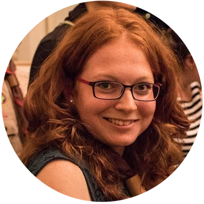

Červenec 2021
První společná dovolená v rakouském Hallstattu.

Dní
Hodin
Minut
Sekund
Vítejte na svatebních stránkách,
které jsme vytvořili, abychom s vámi sdíleli informace o naší svatbě.

restaurace Léta Páně
Národních hrdinů 3, 190 12 Praha – Dolní Počernice
10:30 - 11:30 příjezd hostů (lehké občerstvení)
12:00 obřad
13:30 - 15:00 hostina s rodinou
15:15 krájení dortu
16:00 hod kyticí
18:30 - 19:30 focení novomanželů
20:00 první tanec
změny v programu vyhrazeny :)
Červenec 2021
První společná dovolená v rakouském Hallstattu.
Srpen 2021
Naše druhá společná dovolená v Norsku.
Říjen 2021
První společný závod. Klárka 10 km, Jarda 21 km.
Prosinec 2021
Lyžování.
Únor 2022
Roční výročí.
Červenec 2022
Spolu v Ljublani.
Červenec 2022
Dovolená v Chorvatsku.
Říjen 2022
Zasnoubení.
Říjen 2022
V Českém Krumlově.
Vyplňte prosím formulář níže, dejte nám tím tak vědět, zda dorazíte.
Nezabere to víc, jak minutu a nám to moc pomůže, při organizaci svatby.
Potvrďte vaši účast do 30. 3. 2023 přes níže uvedený formulář:
Svědkyně Mona
Svědkyně Adélka